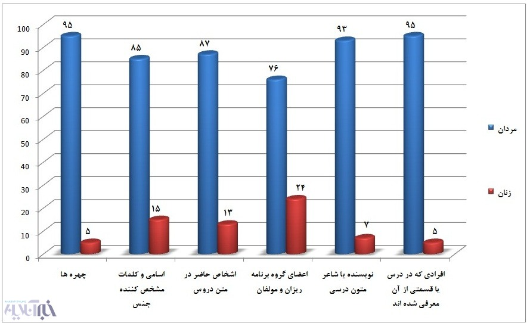

|
|
کتاب های درسی در ایران مردانه هستند؟
چهار شنبه3 مهر 1392
خبر آنلاین: سالهاست که بحث هایی در رابطه با مردانه بودن کتاب های درسی مطرح می شود، حالا در دانشگاه تربیت مدرس پژوهشی انجام شده که صحت و سقم این مسئله را مشخص می کند.
براساس پژوهش صورت گرفته در دانشکده علوم اجتماعی دانشگاه تربیت مدرس از سوی دکتر علی محمد حاضری، عضو هیات علمی گروه جامعه شناسی دانشگاه تربیت مدرس، شش کتاب درسی در مقاطع راهنمایی و دبیرستان مورد بررسی قرار گرفته است. کتاب های مورد بررسی در این پژوهش در مولفه هایی نظیر تصاویر، اسامی، مولفان کتاب ها، نویسندگان متون درس ها و شخصیت های حاضر در متون، حضور بالای مردان و اندک زنان را نشان می دهند. بر اساس این پژوهش 95درصد تصاویر، 85درصد اسامی، 95 درصد بزرگان و مشاهیر معرفی شده، 93 درصد نویسندگان و شعرای متون درسی، 76درصد مولفان و گروه برنامه ریزان و 87 درصد شخصیت های حاضر در متن دروس را مردان تشکیل می دهند. در این پژوهش همچنین آمده است " از نظر کیفی نیز این کتاب ها مردان را عاقل تر، داناتر، قوی تر، مدیرتر و شایسته تر معرفی می کنند و زن ها اغلب در حال گریه و زاری و ابراز عجز و ناتوانی بوده و کارهای محوله به آنها در سطح بسیار پایین بوده است."

سهم اندک زنان در تالیف کتب درسی
براساس نتایج این پژوهش در بخش مولفان و گروه برنامه ریزان، از مجموع 97 نفری که در این گروه ها شرکت دارند؛ 74 نفر مرد (76درصد) و 23 نفر زن (24درصد) هستند. حضور مردان سه برابر بیش از زنان است. در این مورد نیز حضور کم رنگی از زنان به چشم می خورد. البته مشارکت زنان در این قسمت بیشتر در کارهای صفحه آرایی و طراحی است تا تالیف. به طوری که از مجموع 268 نفر نویسنده یا شاعر متون درسی این شش کتاب، 248 نفر مرد (93درصد) و 20 نفر زن (7درصد) هستند. سهم حضور مردان در این بخش از این کتاب ها، بیش از 13 برابر زنان است.
67درصد زنان کودک یا عشایرند
از 18 چهره زن به تصویر درآمده در این شش کتاب، چهار مورد مربوط به دختران خردسال و هشت چهره مربوط به زنان عشایر است. بنابراین 67درصد زنانی که چهره آنها در این کتاب ها به نمایش درآمده کودک یا عشایرند. دو چهره زن نیز در یک نقاشی مربوط به پنج قرن پیش دیده می شوند که در گوشه ای، به طوری که دیده نشوند به مجلس بحث فقها گوش می دهند. چهره زن دیگری که در کتاب فارسی دوم دبیرستان دیده می شود کنیزی است که در حال پذیرایی از تعدادی مرد است. در دو تصویر دیگر در این کتاب ها، زنانی را می توان دید که از شوهر یا پسر خود در حال خداحافظی هستند تا آنها را راهی جبهه کنند.
حضور در راهپیمایی، تنها حضور اجتماعی زنان
بررسی های کیفی در این پژوهش نشان می دهد، تنها تصویری که در این کتاب ها حضور اجتماعی زنان را نشان می دهد؛ مربوط به شرکت آنها در راهپیمایی است. (فارسی دوم راهنمایی، 19) در تصاویر این کتاب ها، عبادت رابطه ای مردانه است. در چندین تصویر، مردان در حال راز و نیاز دیده می شوند؛ درحالی که هیچ زنی مشغول عبادت به تصویر کشیده نشده است. در این قسمت از پژوهش نیز نتایج مشابه و قابل تاملی به دست آمد. حضور مردان در تمام صحنه های اجتماعی، مشهود و چشم گیر است. مردان در راس هرم سیاسی، علمی، ادبی، نظامی و حماسه سازی قرار دارند. همه سرچشمه های قدرت، چه در محیط خانه و چه در اجتماع، به آنها ختم می شود. قهرمان اکثر داستان ها و اشعار مرد است. مردها در بیرون خانه و در همه میدان های اجتماعی حضور دارند. در اغلب داستان ها و اشعار شخصیت ها مرد هستند. مردها در بیرون خانه و در همه میدان های اجتماعی حضور دارند. در اغلب داستان ها و اشعار مربوط به فصل ادبیات پایداری در این کتاب ها، پسری قهرمان قصه است و اوست که باید جانشین شایسته ای برای پدر شود. مهم ترین نقشی که برای زنان تعریف می شود خانه داری است که آن هم از نظر نویسندگان این کتب اهمیت چندانی ندارد تا به عنوان یک موضوع مهم، داستانی در مورد آن نوشته شود و دختری برای رسیدن به آن تلاش کند. زن ها در پایین ترین سطح اجتماعی قرار گرفته اند. در اغلب موارد آنها در حال انجام کارهای خانه هستند. نقش مادری آنها بسیار برجسته می شود. زن ها در عرصه بیرون از خانه کمتر دیده می شوند. تنها در چند مورد حضور آنها در راهپیمایی ها مورد تاکید قرار می گیرد.
معرفی 70 نفر از مشاهیر مرد و یک چهره علم و ادب زن
همچنین در این شش کتاب 71نفر از مشاهیر علم و ادب، همراه با تصاویرشان معرفی شده اند که از این تعداد 70 نفر مرد و تنها یک زن با چهره معرفی می شود که پروین اعتصامی است. در مبحث معرفی مشاهیر و بزرگان در متن دروس (بجز آنهایی که در ابتدای هر درس در بخش تاریخ ادبیات شناسانده شده اند)، تنها دو زن در این کتاب ها وجود دارند. یکی از آنها پروین اعتصامی است که در یک صفحه، به اختصار معرفی می شود. در این بیوگرافی کوتاه با عنوان «مرواریدی در صدف»، بیشتر از آنکه به معرفی پروین پرداخته شود؛ بر نقش مراقبتی و حمایتی پدرش و اینکه چون مرواریدی در صدف از وی مواظبت می کرد، تاکید شده است. (فارسی اول راهنمایی، 104) زن دیگر، «هلن کلر» است که نابینا و کر و لال بوده و با تلاش توانسته، مدارج علمی را طی کند و یک نویسنده شود. در مقابل معرفی این دو زن، 38 مرد در متن دروس معرفی می شوند.